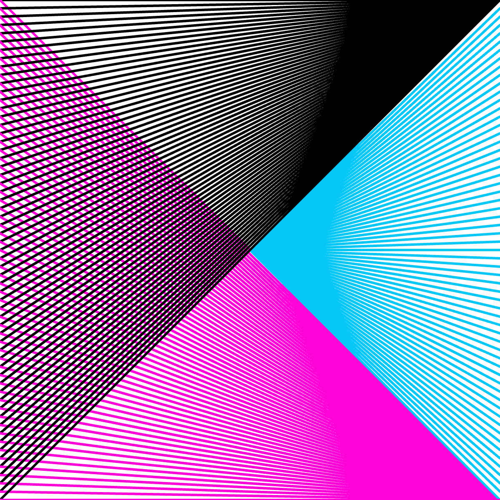

Your sketch:
Setup your sketch in exercise1-3/sketch.js as usual. Create a 600px by 600px canvas.
Your task is to use (ideally one) while loop to create the expected output
shown below.
You can pick whatever three colours and stroke weight you like. A stroke weight of 3 was used to create the image below.
In the image below:
When you are done, check your work using check-exercise1-3.html.
Expected output:

Inside the while loop, draw three lines--one of each colour.
The line() function takes 4 arguments. For each colour, three of those four arguments will be the same every time the loop executes. One argument will be the loop variable. Take a moment to work out which arguments are fixed and which argument will vary for each colour of line—-this should give you the loop variable.
Finally, work out the start value and test condition for the loop variable.